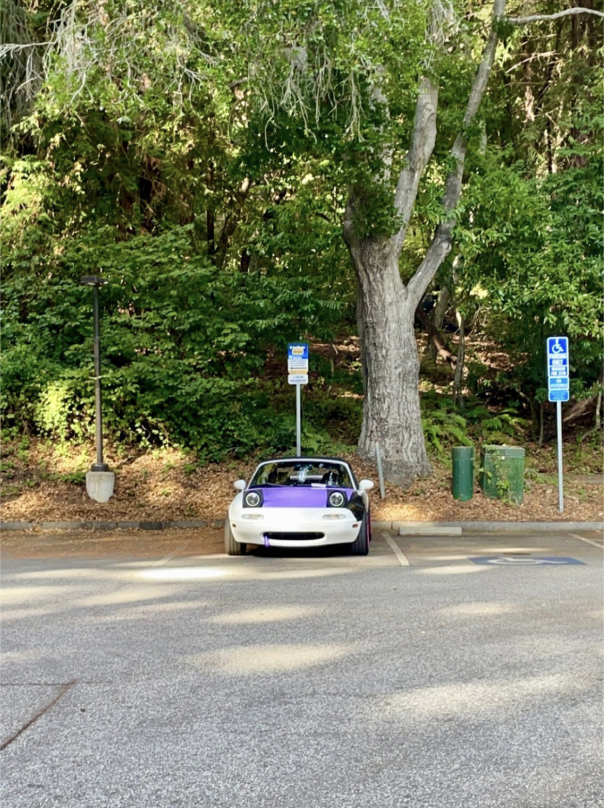

Lab 5 - Data Types & Variables
Challenge
Working with my partner, experiment with basic JavaScript data types and variables.
Problems
I had a few issues getting my image to show up on the page where I wanted it to. It was in this awkward spot between the border that didn't look very good, but after messing with the CSS it was fine.
Reflection
The assignment went by very smoothly for the most part. This isn't my first time working with JavaScript, but it was nice to have a little refresher on different variables for it.
Results
You can see my index.html here, but also look at how cute my car is! Just a little tidbit about my MX5: Her name is Cake! She is a middle-aged 1.6L moneypit with mismatched panels because I haven't found the time to finish wrapping her. Someday she will be a 220 horsepower Eco Tec girly and will be all black with those sweet hot pink heart wheels. I love my miatata. Oh and heres my program execution: